Question 1 [3]
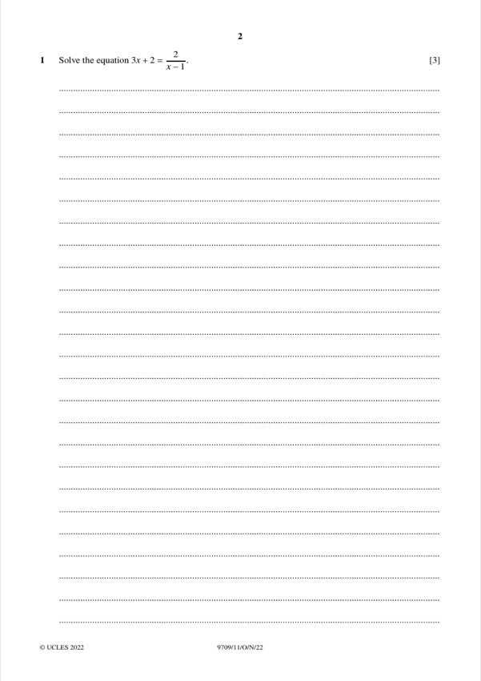
Original paper page 2
Solve the equation 3x + 2 = 2/(x − 1).
(3x + 2)(x − 1) = 2 so 3x² − x − 4 = 0 so (3x − 4)(x + 1) = 0
x = −1 or x = 4/3
Mathematics Paper 1 (Pure Mathematics 1)

Solve the equation 3x + 2 = 2/(x − 1).
x = −1 or x = 4/3
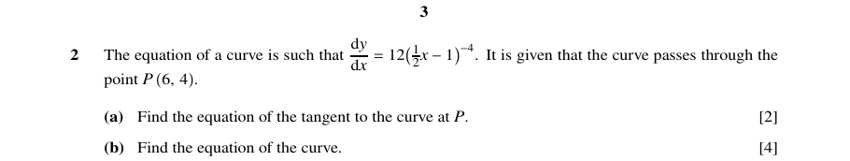
(a) [2] dy/dx = 12(½x − 1)⁻⁴ and the curve passes through P(6, 4). Find the tangent at P.
y = ¾x − ½
(b) [4] Find the equation of the curve.
y = −8(½x − 1)⁻³ + 5
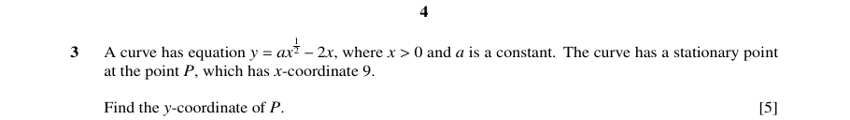
The curve y = a x^½ − 2x (x > 0) has a stationary point P with x = 9. Find the y-coordinate of P.
y = 18
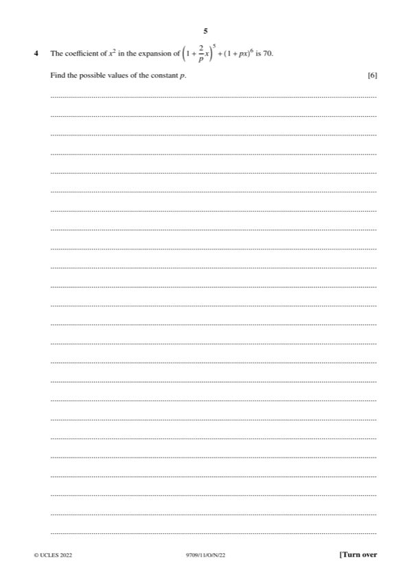
The coefficient of x² in (1 + (2/p)x)⁵ + (1 + px)⁶ is 70. Find the possible values of p.
p = ±2 or p = ±√(2/3) (≈ ±0.816)
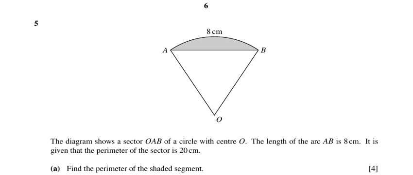
(a) [4] Sector OAB of a circle, centre O. Arc AB = 8 cm. Perimeter of the sector = 20 cm. Find the perimeter of the shaded segment.
15.4 cm
(b) [2] Find the area of the shaded segment.
6.51 cm²
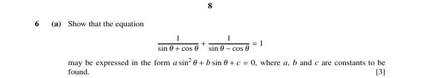
(a) [3] Show that 1/(sin θ + cos θ) + 1/(sin θ − cos θ) = 1 may be written as a sin²θ + b sin θ + c = 0.
2sin²θ − 2sin θ − 1 = 0 (a = 2, b = −2, c = −1)
(b) [3] Hence solve the equation for 0° ≤ θ ≤ 360°.
θ = 201.5° or 338.5°
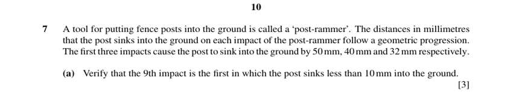
(a) [3] Impacts sink the post 50 mm, 40 mm and 32 mm (geometric). Verify that the 9th impact is the first that sinks it less than 10 mm.
The 9th impact is the first to sink it less than 10 mm.
(b) [2] Find the total depth after 20 impacts, to the nearest mm.
247 mm
(c) [2] Find the greatest total depth theoretically achievable.
250 mm
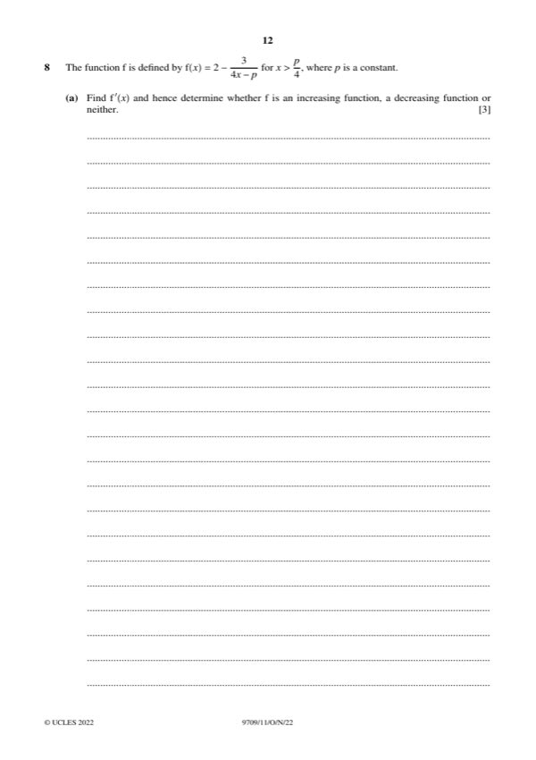
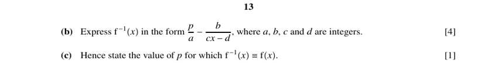
(a) [3] f(x) = 2 − 3/(4x − p) for x > p/4. Find f′(x) and determine whether f is increasing or decreasing.
f is an increasing function
(b) [4] Express f⁻¹(x) in the form p/a − b/(cx − d).
a = 4, b = 3, c = 4, d = 8
(c) [1] Hence state the value of p for which f⁻¹(x) ≡ f(x).
p = 8
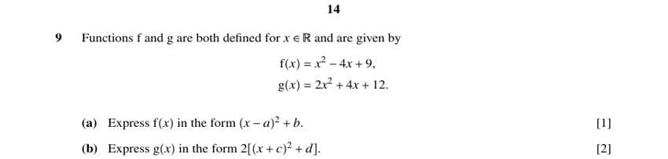
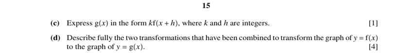
f(x) = x² − 4x + 9, g(x) = 2x² + 4x + 12. (a) [1] Express f(x) in the form (x − a)² + b.
a = 2, b = 5
(b) [2] Express g(x) in the form 2[(x + c)² + d].
c = 1, d = 5
(c) [1] Express g(x) in the form k f(x + h).
k = 2, h = 3
(d) [4] Describe fully the two transformations taking y = f(x) to y = g(x).
Translation (−3, 0), then stretch parallel to the y-axis with scale factor 2
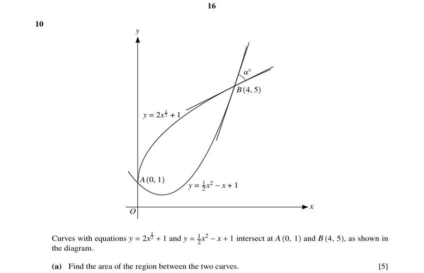
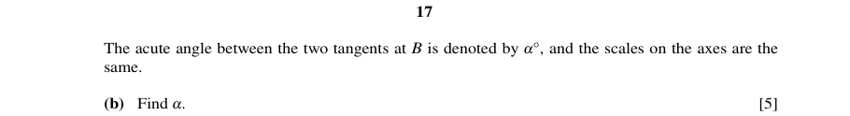
Curves y = 2x^½ + 1 and y = ½x² − x + 1 meet at A(0, 1) and B(4, 5). (a) [5] Find the area of the region between the two curves.
Area = 8
(b) [5] The acute angle between the tangents at B is α°. Find α.
α = 45
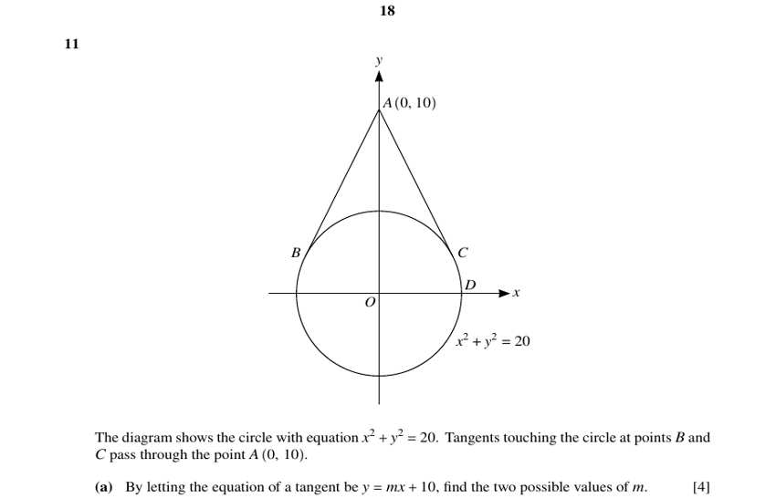
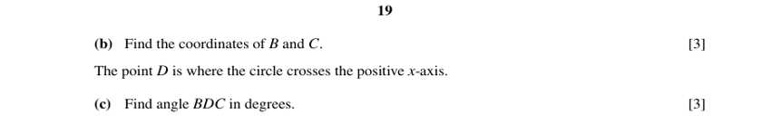
Circle x² + y² = 20; tangents from A(0, 10) touch the circle at B and C. (a) [4] Let the tangent be y = mx + 10. Find the two possible values of m.
m = 2 or m = −2
(b) [3] Find the coordinates of B and C.
B(−4, 2), C(4, 2)
(c) [3] D is where the circle crosses the positive x-axis. Find angle BDC.
Angle BDC ≈ 63.4°